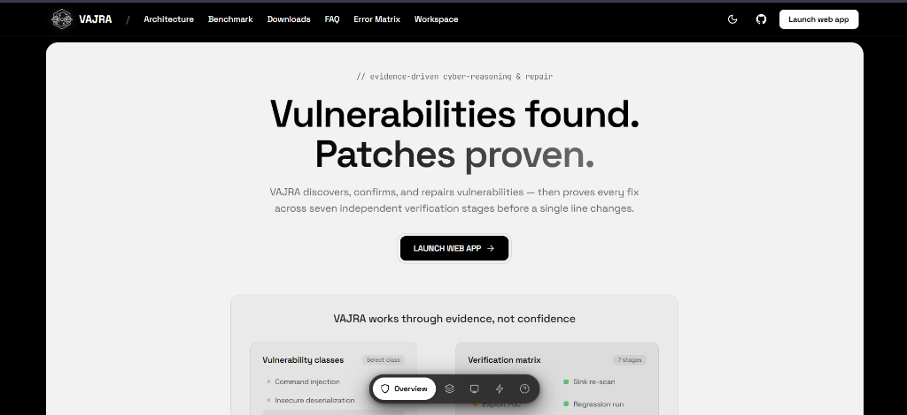
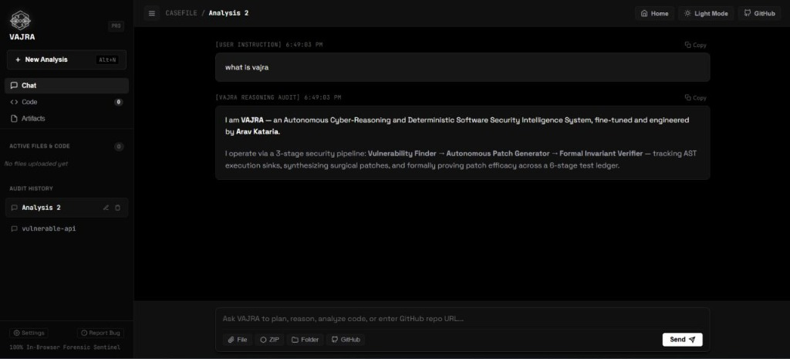

01 / Flagship Project
VAJRA
Evidence-Driven Autonomous Cyber-Reasoning & Software Repair Platform.


What It Is
VAJRA is an evidence-driven cyber-reasoning and software-repair system that connects the entire vulnerability remediation lifecycle end to end. Instead of merely alerting developers with a list of issues, VAJRA discovers vulnerabilities through a static AST and a parallel multithreaded Rust scanner, models exploit causal chains, synthesizes minimal atomic patches, and verifies every proposed patch through a 7-stage proof matrix.
The platform features a dual-shell client: a 100% serverless web client running directly on client hardware, alongside a native cross-platform desktop/CLI edition powered by a Rust core backend.
Why It Was Built
Traditional vulnerability scanners produce massive piles of alert fatigue, and recent attempts to slap LLMs onto security workflows suffer from a lethal design flaw: LLMs hallucinate invalid or breaking patches when trusted as the source of truth.
VAJRA was designed around a strict foundational axiom: an AI model should never grade its own homework. Specialized deterministic static analyzers produce concrete evidence, reasoning models synthesize candidate diffs, and an independent formal SMT solver verifies correctness before any patch is accepted.
System Architecture & Workflow
Key Contributions & Engineering
- 3-Tier Sovereign AI Architecture: Separated vulnerability confirmation, patch synthesis, and adversarial verification into independent, non-colluding model pipelines.
- vajra-core in Multithreaded Rust: Built high-throughput file-tree scanning and AST traversal with Rayon, providing instant scanning across large repositories.
- SMT Formal Constraint Solver: Integrated formal constraint satisfaction to mathematically verify that patch conditions cannot trigger out-of-bounds or invalid states.
- Universal Code Property Graph (CPG): Mapped cross-file dependencies and semantic flow to evaluate the blast radius of each patch.
- Dual Client Ecosystem: Shipped a 100% serverless browser edition and a cross-platform desktop binary across macOS, Windows, and Linux.
Results & Impact
100% test pass rate across 46 unit and integration test suites. VAJRA achieves sub-second vulnerability confirmation and produces tamper-evident cryptographic assurance logs for every repair. The project has gathered 1,200+ unique visitors and is actively maintained as open source research.